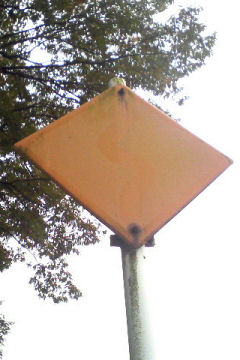

ありふれた
黄色くて四角い
警戒標識
だった物。
だが、今では
すっかり
色が落ちて
正体不明の
黄色い
シロモノに
なってしまった。
日は廻り
黒き塗料も
はげ落ちて
のっぺらぼうに
なり果てたのか。
＜渦巻算の事＞
さて
四国の
ある所に
下図の様な
渦巻きの形の
城がありました。
12━13━14━15━16
┃ ┃
11 ２━３━４ 17
┃ ┃ ┃ ┃
10 １━○ ５ 18
┃ ┃ ┃
９━８━７━６ 19
┃
24━23━22━21━20
本丸の東隣には
五番の番兵を、
また、その隣には
十八番の番兵を
配置しています。
では、本丸から
東にｎ個の位置には
何番の番兵が
いますか？